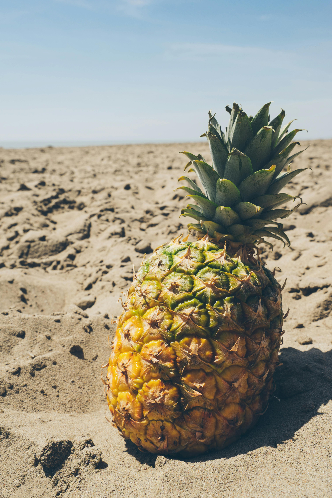

How climate activism fits
in the overall theme
of democracy?
In the overall theme of democracy, freedom of assembly, association, personal property, freedom of religion and speech, citizenship, consent of the governed, voting rights, freedom from unwarranted governmental deprivation of the right to life and liberty, and minority rights are included. Thus, activism forms a cornerstone of democracy.
The climate movement seeks to put pressure on governments and industries to take action to curb the impact of climate change. With rising temperatures and shifting weather patterns, the impact of climate change, which is primarily a result of the burning of fossil fuels, poses a huge risk to humans and the environment. Climate change activists such as Greta Thunberg advocate centring climate justice in their message, which argues that those most responsible for climate change should also contribute the most to addressing the problem.